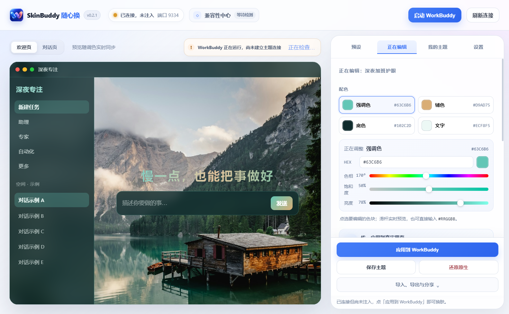

Windows 免费公测 · x64 / x86 / ARM64
让 WorkBuddy 的界面，
成为你的工作环境。
SkinBuddy 随心换是一款独立的本地界面个性化工具。免费公测期间无需激活码：选中主题、实时预览、确认后再一键应用。

不是概念图，是真实工作流
01 / 实际界面先在随心换里确认，
再应用到 WorkBuddy。
随心换把“预览”和“应用”分开：你可以在软件里切换预设、调整颜色与背景，满意后再写入当前客户端。即使 WorkBuddy 更新，也可以先检测兼容性，再决定是否恢复主题。
- 01实时预览欢迎页与对话页可切换查看，调整时即时反馈。
- 02统一主题映射颜色、文字、图标、菜单、弹窗与背景在同一套主题中完成。
- 03可恢复原生状态保留还原入口与兼容性检查，减少升级后的不确定性。
从配色到背景，统一到每一处状态
主题效果，不止换一张图。
主题会同步应用到侧栏、浮层、标签、文本和可点击状态；不把颜色留在孤立的局部。
颜色不是只换在背景上。 每个预设都包含强调色、辅助色、底色和文字色，用于统一预览中的侧栏、按钮、面板和内容层级。
从下载到应用，流程清楚可回退
02 / 三步上手不需要懂代码，
三步完成一次换肤。
整个过程在随心换中完成。软件会先检测连接状态；没有确认前，不会改动当前 WorkBuddy 的界面。
- 01
启动并连接
打开 WorkBuddy 后启动随心换。软件自动检查连接与兼容状态，也可以随时手动刷新。
先检测，再开始 - 02
挑选并微调主题
在预设中选择喜欢的方向，切换欢迎页或对话页实时查看；需要时再改颜色、背景与品牌文案。
预览不等于写入 - 03
确认后应用
点击“应用到 WorkBuddy”才会生效。之后可保存、导出、还原；客户端更新时也可先检查兼容性。
支持还原与恢复
选择与你设备匹配的版本
软件下载
Windows x64
适用于绝大多数 Intel 与 AMD 电脑；免费公测，无需激活。
—Windows x86（32 位）
仅适用于 32 位 Windows，且需搭配 32 位 WorkBuddy。
—Windows ARM64
适用于 ARM 架构的 Windows 设备。
—免费公测，无需激活
下载安装，
立即开始换肤。
当前版本不要求购买、账号、激活码或设备绑定。我们把门槛留给后续迭代，把体验留给现在；你的反馈会直接帮助完善兼容性与主题效果。
- 01下载匹配的 Windows 安装包按 x64、x86 或 ARM64 选择，安装后即可打开。
- 02连接 WorkBuddy，选择主题先预览，再确认应用；不满意随时还原原生界面。
- 03参与公测反馈遇到新版本页面变化或样式问题，可在软件内提交反馈。
使用有路径，交流有入口
遇到问题，先查手册，
再和作者一起定位。
完整手册覆盖首次连接、主题编辑、恢复原生、安全模式和常见故障。若需要交流使用问题、主题建议或兼容反馈，可加入作者 QQ 交流群。
安装前须知
少一点猜测，多一点确定。
- 这是 WorkBuddy 官方软件吗？
- 不是。本工具为独立第三方界面个性化软件，不代表 WorkBuddy 及其关联方。
- 下载后的第一步是什么？
- 先启动 WorkBuddy，再打开随心换；连接状态与兼容性结果会显示在软件顶部。确认预览后才点击应用。
- 软件需要激活吗？
- 当前为免费公测版，不需要购买、激活码、账号或设备绑定。
- 软件能自动更新吗？
- 支持。Windows x64、x86 与 ARM64 版本会在软件内提示更新；确认后下载对应架构的安装包并自动完成升级。